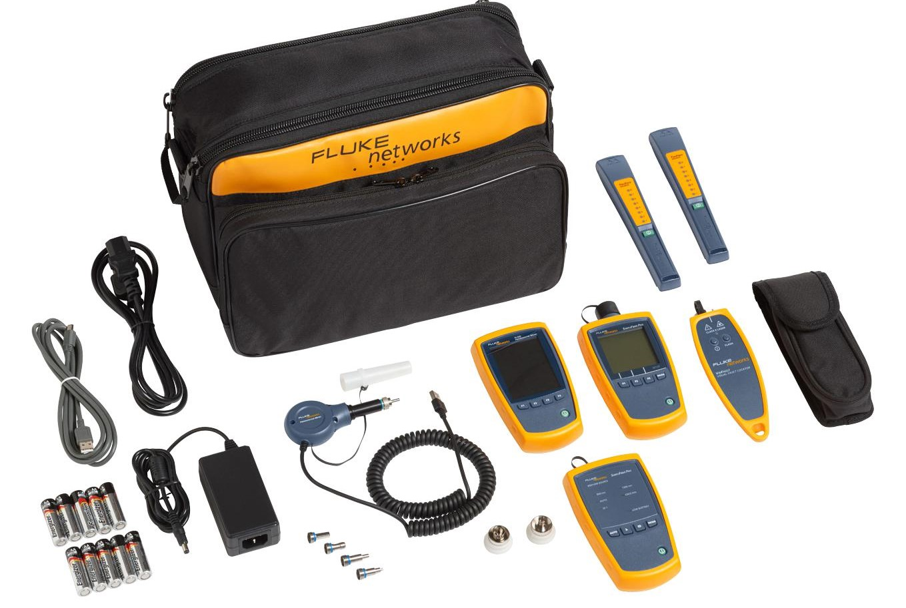
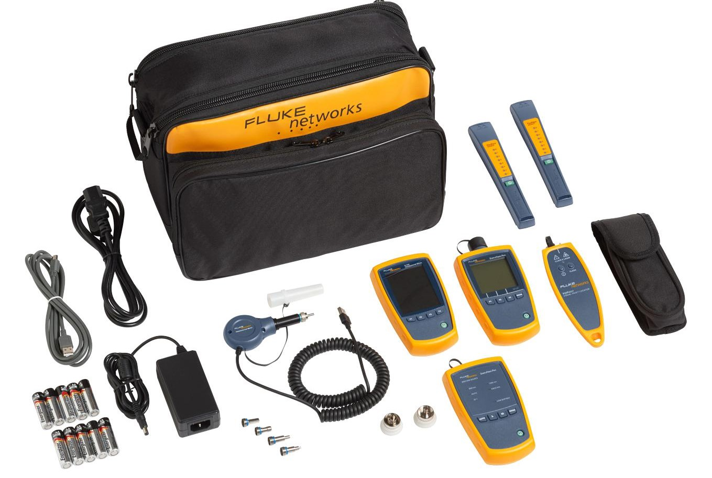

Herramientas para trabajar con la fibra óptica
Peladora o cortadora de cable: cortadora que remueve la chaqueta exterior de los cables.
Peladora de fibra: peladora de precisión que se utiliza para remover el recubrimiento exterior (buffer) de la fibra para la terminación. Existen tres tipos de uso común, a las que se las llama por su marca comercial: "Miller Stripper" (peladora Miller), "No-Nik" y "Micro Strip."
Cortadora: herramienta que "rompe" con precisión la fibra y produce una terminación plana para empalme o pulido.
Lápiz rayador con punta de carburo: herramienta resistente y con punta afilada que raya la fibra para realizar el corte.
Disco de pulido: para conectores que requieren ser pulidos, el disco sostiene al conector alineándolo con el papel de lija granulado para pulir.
Papel de lija granulado para pulir: papel fino y granulado utilizado para pulir el extremo de la férula del conector.
Crimpadora: herramienta que crimpa el conector a las fibras de aramida del cable para otorgarle resistencia mecánica.
Fusionadora de fibra óptica: instrumento que suelda dos fibras en una unión permanente.
Equipo de comprobación de fibra óptica
Medidor de potencia óptica: instrumento que mide la potencia óptica desde el extremo final de una fibra.
Fuente de luz: instrumento que utiliza láser o LED para emitir una señal óptica y así medir la pérdida de una fibra o un cable.
Equipo de comprobación de pérdidas ópticas (OLTS): instrumento de medición que incluye tanto un medidor como una fuente y se utiliza para medir la pérdida de inserción de redes de cableado o de cables individuales. También conocido como fuente de luz y medidor de potencia (LSPM).
Cables de prueba de referencia: cables de fibra monomodo con conectores en ambos extremos, que se utilizan para probar cables desconocidos. Se conecta un cable de lanzamiento a la fuente para establecer la potencia de referencia para las mediciones de pérdida y se conecta un cable de recepción al medidor de potencia.
Adaptador de acoplamiento: también llamado adaptador empalme o acoplador; permite el acoplamiento de dos conectores.
Trazador visual de continuidad: fuente visible de luz (LED o de magnesio) que permite comprobar visualmente la continuidad y el trazado para lograr conexiones adecuadas de conectores de doble polaridad, por ejemplo.
Localizador visual de fallos: fuente de luz láser visible de gran potencia que permite comprobar la continuidad de la fibra, trazar visualmente la continuidad y localizar fallos cerca del final del cable.
Microscopio para inspección: se utiliza para inspeccionar el extremo de un conector en busca de fallos como rayaduras, pulido o suciedad.
Reflectómetro óptico en el dominio del tiempo (OTDR): instrumento que utiliza luz retrodispersada para tomar una foto de una fibra óptica, la que puede utilizarse para medir la longitud de fibra, pérdidas de empalme, la atenuación de fibra y para localizar fallos en la fibra desde un sólo extremo del cable.
 
